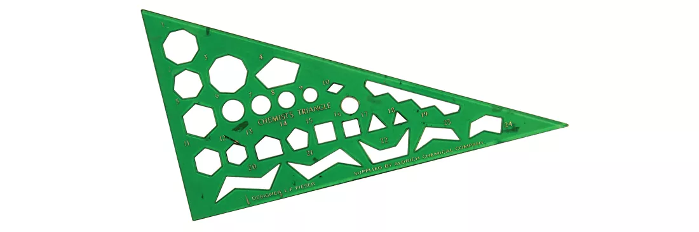
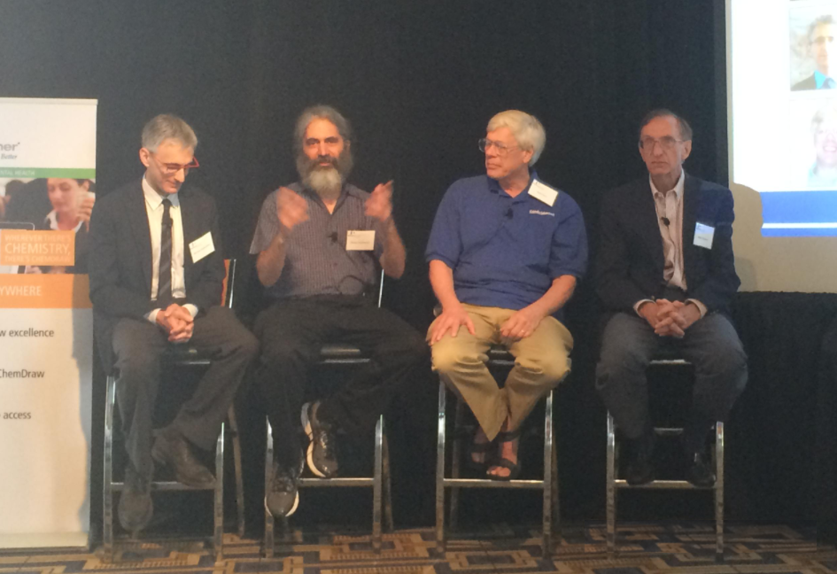
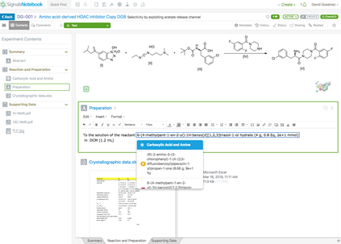

1985 年，Sally Evans 在哈佛的化学实验室里帮丈夫 David 准备讲义和论文。David 想改一处化学结构。这个决定只要几秒钟，活儿却落在 Sally 的制图桌上。她得重新摆好模板，描线，排字。图复杂的时候，她能在桌前一坐就是四个小时。快画完了蹭花一滴墨，前面几个小时也可能跟着搭进去。
据 David 后来回忆，Sally 曾半开玩笑地问实验室里一个懂编程的研究生，愿不愿意救救她的婚姻。这个人叫 Stewart Rubenstein，他自己也有篇论文要写，里面几百个化学结构等着配图。两个人手里各有一摞活儿，都有理由把这句玩笑当真。后来三个人一起做出来的软件，叫 ChemDraw。
谁在替一个小改动买单？
Sally 本来在加州教科学和数学。1983 年 David 把实验室从加州理工搬到哈佛，她跟着到了马萨诸塞州的剑桥，帮忙设计实验室空间、准备教学材料。后来很多讲 ChemDraw 的文章，只说她是「教授的妻子」。三个人里，她最知道一张能交给出版社的图，要怎样从空白纸上一笔一笔长出来。

看看当时用的化学制图尺就明白了。直边、圆孔、六边形，全都预先做好，手沿着走就行，画得准并不是最难的事。麻烦在纸只有一张。六边形一旦画好，就跟旁边的字、箭头和反应条件共用一块地方。David 改口时哪怕只想动其中一小块，Sally 也没法把另外几块拿起来，往边上挪一挪。

假如当时让我去旁观，我多半会先盯着她画第一遍，记下画一个环用了几秒。这恰恰会错过最贵的一步。想看懂这张桌子该怎么改，得等图快画完的时候，请那位要改图的人走进来。他说要改哪里，再看拿笔的人实际得重做多少。两个人指的地方差得越远，值得改的地方就越清楚。
一张值得带去茶歇的图
1985 年初，Evans 家买了一台 Macintosh。鼠标可以指着屏幕上的东西直接操作，Stewart 又熟悉化学，能把纸上的惯例搬进软件。David、Sally 和实验室的学生不断给他反馈。他自己那篇等着配图的论文，顺手成了最实在的验收标准。一张图画完，可以拿去排版吗？导师让改一处，明天交稿还来得及吗？
换一款普通画图软件，研究者当然也能拿线段拼出一个环。可六根线挪过去以后，接在环外的那根键怎么办？化学家看两条线怎么接，看的是分子长什么样。结构得作为一个还能继续编辑的东西留在文件里，一次更正才停得在该停的地方。多年以后，ChemDraw 已经能根据结构算出分子式。人画下去的是线，软件记下的还有这些线表达的关系。

1985 年 7 月，Stewart 和 Evans 夫妇在一次化学会议的茶歇演示了 ChemDraw。这个场合选得好，台下的人个个知道一幅这样的图用墨水画有多麻烦，看完演示，自己就能算出这套东西值多少钱。耶鲁的 Stuart Schreiber 后来成了第一位付费用户。等到 David 外出讲学，他甚至会在致谢页留下 Stewart 的电话。刚看完一整场用软件画的结构，台下已经有东西可问了。

把画板放进实验记录里
旧稿接下来按年份记了许多产品。现在回头看，我愿意在 2000 年多停一会儿。那一年发布的 E-Notebook 把 ChemDraw 放进了电子实验记录本，科学家可以在记录实验的地方画结构了。只看菜单，这像是给笔记本加了个绘图工具。换到交接工作的那一头，分量就不一样了。
设想你接到同事的一份记录，上面贴着一张反应图。只是读报告，图够清楚就行。可你要接着改结构，这张图片就是一条死路。你得去找画图的源文件，确认它和这份记录是同一版，改好再把图片贴回来。中间每一步都办得到，难的是几周后还有人记得图从哪里来。能把编辑留在记录里，后来接手的人就少背一个只有原作者才知道的文件名。
放进去只是第一步。早些年，网页绘图靠 ActiveX 控件，还挑浏览器。实验记录明明已经打开了，能不能下笔，取决于这台电脑装没装对东西。2015 年，ChemDraw Direct 进了云端记录本，画结构不再依赖 IE 和那个控件。2017 年的 ChemDraw JS 又把绘图能力嵌进了更多网页应用。对开发者，这是两个阶段的工程。对坐在屏幕前的人，差别就一句话，换一台电脑打开这份记录，还能从这里接着画吗？

后来我在 Signals 遇到的是一道倒着走的题
我做 Signals Notebook 的材料追溯时，研究者已经能在实验记录里登记衍生材料。顺着当天的工作看，很合理。人开着实验，把新得到的材料记到表里，手边的信息正好够用。几个月后再有人来查，手里往往只剩一个材料编号。系统当初按实验收下了这条记录，来找它的人却压根不知道该打开哪个实验。
再往下问才发现，同一种材料还分批次。知道材料叫什么，只够确定大方向。上一次实验用的是哪一批，那一批后来又用在哪里，这些要逐条核对。把所有关系画成一张大图，屏幕上会很热闹，用户最后交给同事的答案却得落到一条具体的批次记录上。图上就算找到了，记录打不开，人还是得抄下编号再去查一次。
我的做法是在材料详情里加一个谱系页签，让人从手里已有的材料出发。图负责选路径，旁边保留批次和关联记录，细节随手能核。属性全塞给节点，单看一个节点是省事，分支一多，整张图就没法看了。我宁可让查细节多点一次，也要让研究者选中一条支路之后，仍然看得清它从哪里分出来。

在这个项目的一项材料追溯任务验证里，查完一条谱系的时间从约两小时降到四十分钟。数字只对应那一项查找任务，省下的正是过去花在打开记录、抄编号、回头核对上的时间。Sally 每重新描一根线，旁边的人都看得出她在返工。屏幕上的返工安静得多，有时只是连续几次复制、粘贴、按返回键。
把最后五分钟留给一次修改
现在评审专业软件，我愿意把演示的最后五分钟留给一个小请求。请演示者打开刚才做完的东西，改一个地方，再让另一个人接手。两个人交接时额外说了什么，我就记什么。源文件在哪个文件夹、该打开哪一批、为什么屏幕上这张图还是昨天的版本，这些临时补上的交代，往往比演示里走得最顺的那条路更值得设计。
当年的制图尺今天看起来仍然漂亮，六边形它已经画得足够好。下一次有人问我，专业工具还能从哪里开始改，我想先看看那个六边形画完以后，谁又被叫回了桌边。